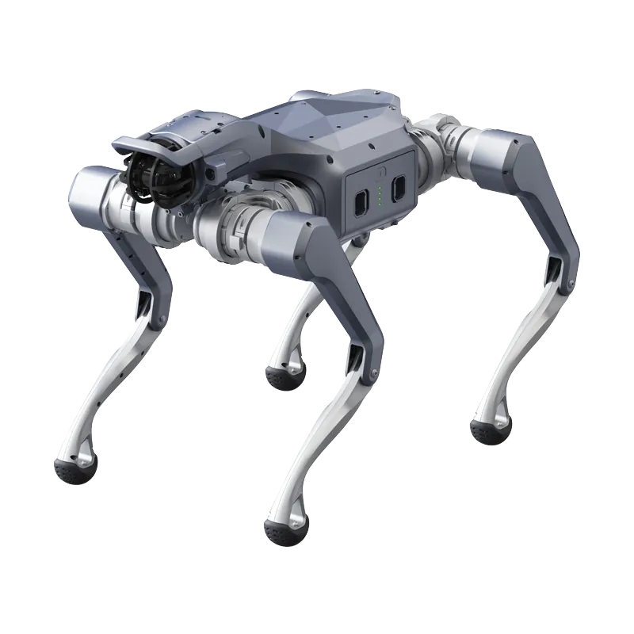

Se cerchi «Unitree AS2-W price» la risposta ufficiale è breve: Unitree non espone un prezzo. Nella tabella parametrica della pagina As2-W, alla voce Price, sia As2-W X sia As2-W EDU rimandano a «Contact Sales». In Italia l'AS2-W si quota su configurazione; il listino pubblico Abra espone invece le altre versioni della famiglia AS2, con prezzi End-User IVA esclusa.
Unitree AS2-W price: prezzo in Italia e perché è su preventivo
L'AS2-W esiste in due versioni, X ed EDU. La EDU cambia dotazione: base di ricarica inclusa, predisposizione per un modulo di calcolo ad alte prestazioni, sensori e accessori scelti in fase d'ordine. Unitree scrive che i parametri possono variare con la configurazione e invita a contattare le vendite prima dell'acquisto.
| Voce | AS2-W X | AS2-W EDU |
|---|---|---|
| Prezzo Unitree | Contact Sales | Contact Sales, soluzioni industriali personalizzate |
| Base di ricarica | non inclusa | inclusa |
| Dock di calcolo | non incluso | opzionale, per esempio NVIDIA Orin NX |
| Sviluppo con SDK | sì | sì |
| Garanzia | 12 mesi | 12 mesi |
Nel listino pubblico Abra la famiglia AS2 va da 5.400 € (AS2 Air) a 21.276,67 € (AS2 EDU Ultimate), IVA esclusa. L'AS2-W non compare in questa forbice: le due versioni X ed EDU sono quotate su preventivo, perché il prezzo finale dipende da configurazione e accessori. Le schede AS2-W X e AS2-W EDU Standard riportano «Prezzo su richiesta».
Gli accessori condivisi tra AS2 e AS2-W hanno invece un prezzo esposto e vanno considerati nel costo di esercizio: batteria standard da 8000 mAh a 586,95 €, batteria a lunga autonomia da 15000 mAh a 880,41 €, caricabatterie rapido a 220,10 € e telecomando dual-hand a 366,83 €, sempre IVA esclusa. L'AS2-W arriva con batteria da 15000 mAh, caricabatterie rapido e telecomando; gli acquisti successivi servono come ricambi o seconda batteria.
Specifiche ufficiali dell'AS2-W
I dati che seguono vengono dalla tabella parametrica Unitree e dalle schede prodotto, non da prove indipendenti. Sono valori dichiarati in laboratorio e possono cambiare con terreno, carico e temperatura.
| Specifica | AS2-W X e EDU |
|---|---|
| Dimensioni in piedi | 721 × 493 × 521 mm |
| Peso con batteria | circa 25 kg |
| Ruote | 7 pollici, diametro 178 mm |
| Gradi di libertà | 16 |
| Coppia massima ai giunti | circa 95 N·m |
| Carico in marcia continua | circa 16 kg |
| Carico massimo da fermo | circa 150 kg |
| Velocità | 0-3,7 m/s, punta circa 6 m/s |
| Gradini e pendenze | gradini da 30 cm, pendenze circa 45°, ostacoli 0,4-0,8 m |
| Autonomia | circa 3 h e 30 km senza carico; oltre 2 h e 25 km con 16 kg |
| Batteria | 15000 mAh (648 Wh), ricarica rapida 50,4 V 7,4 A |
| Protezione | IP54 |
| Sensori | LiDAR industriale 64-128 linee, telecamera HD, microfono, altoparlante, luce frontale |
| Calcolo | CPU 8 core; modulo di espansione fino a 150 TOPS opzionale |
Differenze tra AS2 e AS2-W
Rispetto all'AS2 i gradi di libertà passano da 12 a 16 e il peso sale di circa 5 kg. Coppia massima, batteria e protezione coincidono con quelle di AS2 X ed EDU: 95 N·m, 15000 mAh, IP54.
| Specifica | AS2 X / EDU | AS2-W X / EDU |
|---|---|---|
| Peso con batteria | circa 20 kg | circa 25 kg |
| Gradi di libertà | 12 | 16 |
| Carico in marcia | circa 15 kg | circa 16 kg |
| Carico da fermo | circa 65 kg | circa 150 kg |
| Velocità massima | circa 5 m/s | circa 6 m/s |
| Scale | gradini da 25 cm | gradini da 30 cm |
| Pendenza | circa 40° | circa 45° |
| Autonomia senza carico | circa 4 h, 20 km | circa 3 h, 30 km |
| Autonomia con carico | oltre 2,5 h con 15 kg, 13 km | oltre 2 h con 16 kg, 25 km |
Le ruote fanno risparmiare tempo sui percorsi lunghi e regolari: piazzali, capannoni, corridoi, perimetri. Le zampe restano superiori dove il terreno cambia spesso o l'autonomia a vuoto conta più della velocità di punta. Se il percorso è tutto scale e pavimenti irregolari, l'AS2 X o la EDU restano la scelta più lineare.
Robotic wolf e super athlete: cosa sono questi nomi
«Super Athlete» è l'etichetta usata nella copertura del lancio dell'AS2-W, mentre Unitree in pagina parla di «Powerful Pioneer». «Robotic wolf» è il nome usato dai militari cinesi, riportato dalla stampa specializzata: lo stesso AS2-W è comparso in esercitazioni cino-mongole. Nessuno dei due è un nome di prodotto Unitree.
L'AS2-W è presentato da Unitree come robot civile per sicurezza, ispezione e applicazioni avanzate. Unitree non dichiara una certificazione ATEX per questa piattaforma. Per un impiego in atmosfere esplosive la conformità alla direttiva 2014/34/UE va verificata caso per caso.
Informazioni generali, non consulenza legale: la valutazione delle zone a rischio va fatta con il datore di lavoro e i suoi tecnici.
Cosa sa fare: ispezione, sorveglianza e ricerca
Per l'ispezione l'AS2-W mette insieme LiDAR industriale da 64-128 linee, telecamera HD e IP54. Unitree lo indica per sicurezza e ispezione, con la possibilità di aggiungere un modulo di espansione da 150 TOPS per elaborare a bordo i dati dei sensori. L'autonomia dichiarata senza carico è di 30 km, contro i 20 km dell'AS2 X/EDU.
Nella ricerca il punto tecnico è la parte ruote-zampe: 16 giunti, transizioni tra rotolamento e cammino, controllo su terreni misti. X ed EDU supportano lo sviluppo software con SDK e API. La scheda AS2-W X cita anche l'uso in simulatori come Isaac Sim, utile per addestrare policy prima delle prove fisiche.
IP54 protegge da polvere e spruzzi, non dall'immersione. Per fango e ambienti molto sporchi la gamma prevede l'A2 (IP56) o il B2 (IP67); l'AS2-W si ferma a IP54.
AS2-W X o EDU: quale scegliere
Meccanica e prestazioni sono le stesse. Cambia la dotazione per l'uso autonomo e per il calcolo a bordo. La X è la versione giusta se la ricarica la gestisci tu e il computer per l'elaborazione ce l'hai già esterno. La EDU conviene se vuoi la base di ricarica inclusa e il dock per un modulo di calcolo come NVIDIA Orin NX, da aggiungere alla configurazione.
Entrambe supportano SDK e API; cambia dove gira il calcolo. Per un laboratorio che lavora su locomozione e controllo, la X basta. Per un progetto di ispezione con visione a bordo, la EDU è predisposta per il dock di calcolo, da aggiungere in configurazione.
Come costruire un preventivo utile
- Versione: X o EDU, e se serve il dock di calcolo.
- Percorso: metri al giorno, fondo, scale, pendenze, presenza di persone.
- Carico: sensori e attrezzatura, con il peso reale e non stimato.
- Autonomia: quanti giri per carica e se serve una seconda batteria.
- Ricarica: manuale o base di ricarica, che nella EDU è inclusa.
- Software: cosa deve girare a bordo e cosa deve arrivare al tuo sistema.
Con questi dati l'offerta dell'AS2-W si può confrontare con quella di un AS2 o di un Go2-W. Abra Robotics, parte della filiera di distribuzione di Unitree Italia, prepara l'offerta sulla configurazione.

Domande frequenti
Quanto costa l'Unitree AS2-W?
Unitree indica «Contact Sales» per AS2-W X ed EDU: non c'è un prezzo pubblico. Nel listino Abra la famiglia AS2 va da 5.400 € a 21.276,67 € IVA esclusa, mentre l'AS2-W si quota su configurazione.
Che differenza c'è tra AS2 e AS2-W?
L'AS2-W aggiunge ruote da 7 pollici alle zampe: rispetto all'AS2 X/EDU pesa circa 25 kg contro 20, ha 16 gradi di libertà contro 12, porta 16 kg contro 15 e supera ostacoli più alti. In cambio dichiara 3 ore di autonomia senza carico contro 4.
L'AS2-W è un robotic wolf o un super athlete?
Sono soprannomi, non nomi di prodotto. Unitree lo presenta come «Powerful Pioneer»; «robotic wolf» nasce dall'impiego dello stesso AS2-W in esercitazioni militari.
Quanto carico porta e quanto dura la batteria dell'AS2-W?
Circa 16 kg in marcia continua e 150 kg da fermo. La batteria da 15000 mAh dichiara circa 3 ore e 30 km senza carico, oltre 2 ore e 25 km con 16 kg.
L'AS2-W si può programmare?
Sì, sia la X sia la EDU supportano lo sviluppo software con SDK e API. La EDU aggiunge la base di ricarica e la possibilità di montare un dock di calcolo, per esempio NVIDIA Orin NX.
AS2-W o AS2 per l'ispezione?
AS2-W conviene su percorsi lunghi e regolari; AS2 X/EDU su scale, terreni irregolari e quando serve più autonomia. Per ambienti bagnati o sporchi valuta A2 e B2.
Fonti
- Unitree, As2-W, specifiche ufficiali e tabella parametrica
- Unitree, As2, specifiche ufficiali delle versioni Air, Pro, X ed EDU
- Militarnyi, Robotic Wolf: China Unveils New AS2-W UGV
- Commissione europea, Equipment for potentially explosive atmospheres (ATEX)
- Prezzi: listino pubblico Abra Robotics, IVA esclusa, spedizione e dazio in Italia inclusi.